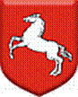
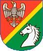
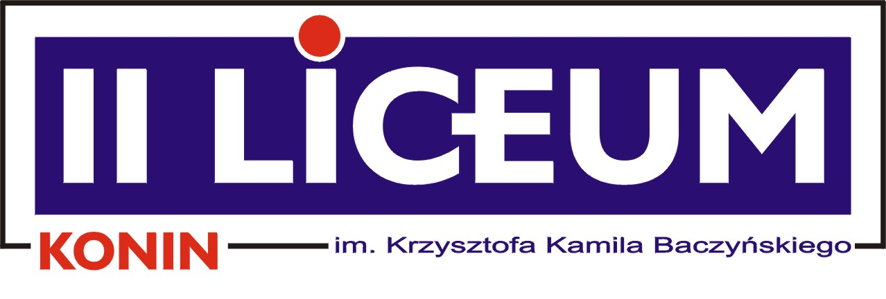
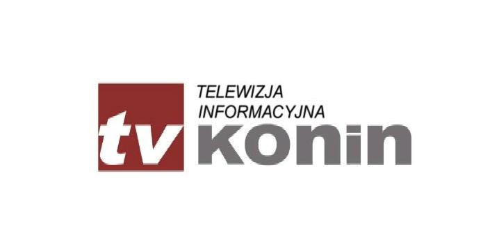

21 kwietnia 2007 r.

VIII Mityng Bryd¿owy Ziemi Koniñskiej
Dwusesyjny Turniej Par na zapis
Maksymalny
I
sesja
(2 minisesje) o godzinie 10.00
o
Puchar Starosty Koniñskiego
II
sesja
(2 minisesje) o godzinie 14.00
o Puchar Prezydenta
Miasta Konina
Klasyfikacja ³±czna na
podstawie wyników z obu turniejów
Miejsce
Rozgrywek:

II Liceum im. K. K.
Baczyñskiego w Koninie;
62-510 Konin, ul. 11 Listopada 7a
Organizator: Koniñskie Towarzystwo
Bryd¿owe
Patroni medialni:
Przegl±d
Koniñski
Radio
FLASH 
TV Konin
Wpisowe:
30 z³ + 5 z³ od nie
zrzeszonych w PZBS
20 z³ + 5 z³ od
cz³onków PZBS
10 z³ + 5 z³ od
seniorów i juniorów PZBS
5 z³ od m³odzie¿y szkolnej
Nagrody:
finansowe: nie mniej ni¿ 60% wpisowego.
rzeczowe: tradycyjnie liczne od sponsorów.
Organizator
zapewnia w przerwie zawodów posi³ek dwudaniowy w cenie 12 z³